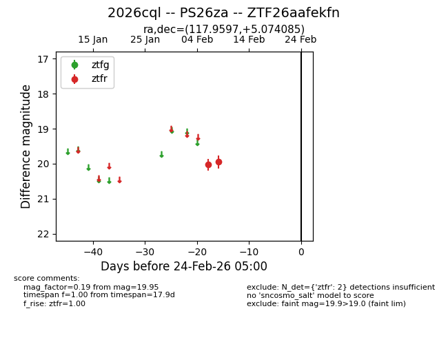
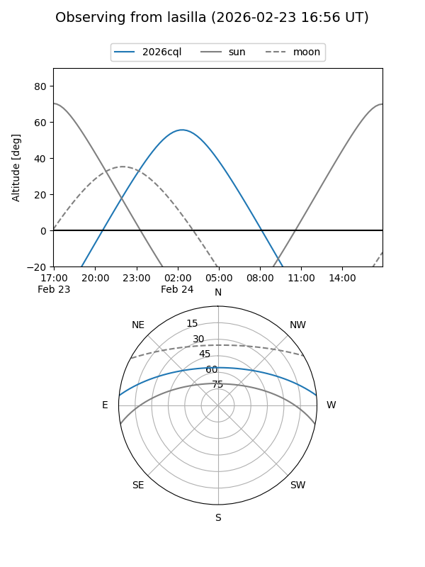
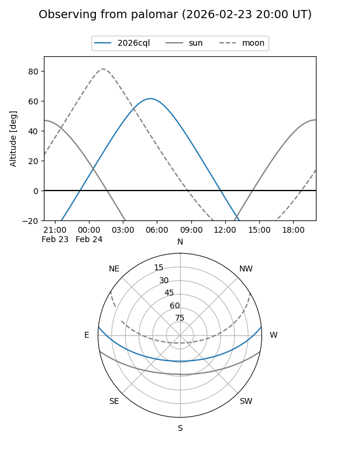

2026cql
Target 2026cql at 2026-02-24 09:08
Aliases and brokers:
FINK: link
Lasair: link
ALeRCE: link
TNS: link
YSE: link
alt names
ZTF26aafekfn (ztf,fink_ztf)
2026cql (tns,yse)
PS26za (panstarrs)
Coordinates:
equatorial (ra, dec) = 117.9597,+5.07409
equatorial (HMS+DMS) = 07:51:50.32,+05:04:26.71
galactic (l, b) = (215.2904,+15.73980)
Flags:
Photometry:
last ztfr=19.95
2 ztfr detections
Lightcurve

Visibility


Additional plots